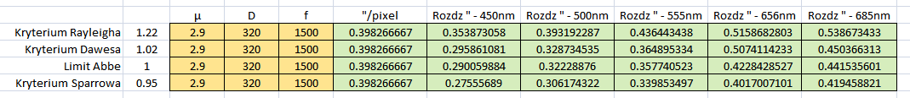

.
CZĘSTOTLIWOŚĆ PRÓBKOWANIA
|
Rozdzielczość optyki i częstotliwość próbkowania są kluczowe przy badaniu możliwości posiadanej optyki pod względem zdolności obrazowania najdrobniejszych detali. Nic tak się nie nadaje do testowania tytułowych zagadnień w świecie makro, jak punktowe ciasno położone źródła światła, którymi są gwiazdy na niebie. Na potrzeby niniejszego opracowania użyto Teleskopu systemu Newtona o średnicy zwierciadła 320mm i ogniskowej 1500mm, kamerki CMOS ZWO ASI 290MM-C z pikselem o rozmiarze 2.9µ, oraz pary gwiazd HIP 72153 o separacji 0,5 sekundy łuku nieba. Użyta para gwiazd HIP 72153 jest o stosownej jasności (nie za jasna, nie za ciemna), i o stosownej separacji (rzeczona para nie zostanie odseparowana z przerwą przez natywną ogniskową teleskopu 320/1500 oraz kamerką ASI 290MM-C z pikselem o rozmiarze 2.9µ), będę więc mógł za pomocą Soczewek Barlow-a modelować różne wartości próbkowania. Inaczej mówiąc, rozmiar piksela kamerki dla tego zestawu optycznego jest zbyt duży, aby obsłużyć generowaną przez optykę rozdzielczość, co pozwoli osiągnąć ciekawe wyniki. Parametry badanej pary gwiazd: Sep Mag Mag2 Delta Spectr Const Ra Dec Nazwa 0.5 7.75 8.66 0.91 F6V Boo 14:45:29.74 +42:22:56.4 HIP 72153Do zebrania materiału w większej skali obrazowania, tj. z Soczewkami Barlow-a, wystarczył bardzo dobry seeing, ale już do zebrania materiału celem obrazowania natywnej ogniskowej, gdzie para gwiazd ujawnia się na 1x2 piksele, seeing musiał być rewelacyjny. Dodatkowo sporo trudności sprawiała akwizycja, analiza i stackowanie materiału. Programy do obróbki astrofotografii nie są przystosowane do obsługi czegoś, co wygląda jak hot pixel a jest naszym obrazem. I tu niezmiennie z pomocą przyszedł mi stary niezawodny Registax5. Parametry obrazowania: 320/1500/2.9µ - HIP 72153 sep 0,5″ . Para gwiazd ustawiona na pikselach kamerki poziomo - pionowo - po przekątnej. Stack Lucky Imaging - po 200 najlepszych klatek z 10000 klatek każdego filmu. Na upartego można by twierdzić, że układ (przekątna) rozdziela gwiazdy z przerwą. ;) Jako uzupełnienie, załączam krótkie wycinki AVI ww. obrazowań 2000kl każdy. Małe okienko, bo w takim nagrywałem, wystarczy zmaksymalizować na cały ekran i wszystko ładnie widać. POZIOM - PION - PRZEKĄTNA Jak widać, dla mojego teleskopu 320/1500, wraz z kamerką ASI290MM-C z matrycą o pikselu 2,9 mikrona, natywna ogniskowa (1500mm) nie przenosi pełni możliwych do uzyskania informacji (podpróbkowanie). Dwie gwiazdy o separacji 0,5″ są sklejone w kreseczkę (2x1) piksele, a jak się zaraz przekonamy, nie musi tak być, gdyż można bez problemu uzyskać detal 3 pikselowy, czyli: jasny piksel gwiazdy - ciemny piksel przerwy - jasny piksel gwiazdy (3x1), ale do tego jest już niezbędna ogniskowa 2000mm i tu spieszy nam z pomocą Barlow 1,3x Parametry obrazowania: 320/2000/2.9µ - HIP 72153 sep 0,5″ . Przestrzeń pomiędzy centrami gwiazd to 1 piksel, widać więc, że pozyskaliśmy informację, która z powodu zbyt małej częstotliwości próbkowania została zatracona w poprzednim zestawieniu. Barlow o jeszcze większej krotności (2,25x), zapewnia nam dużo lepsze próbkowanie, przerwa między gwiazdami staje się 2-pikselowa. Parametry obrazowania: 320/3375/2.9µ - HIP 72153 sep 0,5″ . Barlow o jeszcze większej krotności sprawia, że przerwa staje się jeszcze wyraźniejsza. Parametry obrazowania: 320/4000/2.9µ - HIP 72153 sep 0,5″ . Ciekawym też jest zjawisko tęczy rysowanej przez pierścienie dysku Airy’ego zaobserwowane na przykładzie gwiazd: HIP 72153 - 0,5″ oraz 16 Vul - 0,8″ efekt wynika z faktu, iż różne długości fali światła rysują pierścienie różnych rozmiarów. Parametry obrazowania: 320/4000/2.9µ - HIP 72153 sep 0,5″ SLOAN samoróbka. . jaśniej ... . HIP 72153 - 0,5″ wykonałem filtrami SLOAN, gdyż serwują nam one większy rozrzut zakresu długości fali niż wykonane poniżej 16 Vul - 0,8″ filtrami RGB. Dyspersja atmosferyczna odcisnęła swoje piętno na kształcie gwiazd 16 Vul - 0,8″, ponieważ jak na tego rodzaju obrazowanie, leży ona zbyt nisko nad horyzontem. Parametry obrazowania: 320/4000/2.9µ - 16 Vul - 0,8″ . Inne przykłady rozdzielczościowe dla różnych wartości separacji gwiazd. Her - HD 161016 - 0,7″ Parametry obrazowania: 320/4000/2.9µ . Boo - HD 125261 - 0,4″ Parametry obrazowania: 320/4000/2.9µ . Her - HD 147276 - 0,3″ Parametry obrazowania: 320/4000/2.9µ . Jak widać, 320/1500 gwiazdy w pełnym paśmie widma z pełną przerwą rozdziela do 0,5″, przy 0,4″ gwiazdy zaczynają się już kleić do siebie, przy 0,3″ są już sklejone w owal. Przedstawione w opisie zdjęcia stanowią 800% oryginałów, są zoom-owane na piksele, a nie skalowane. Co przez to rozumiem? Przykład poniżej. . Zoom-owany Skalowany Tabela poniżej zawiera zestawienie różnych kryteriów rozdzielczości dla optyki 320/1500 w zależności od długości fali światła. .  Soczewki Barlow-a użyte do obrazowania zamieszczonych przykładów to: Barlow samoróbka z kamerki SONY CCD-F250E Video 8 Handycam ok. 1,3x Barlow samoróbka z kamerki SONY CCD-F250E Video 8 Handycam ok. 2,7x Baader Hyperion ok. 2,25x O próbkowaniu i innych kwestiach pisze także w opracowaniu: Zrozumieć KAMERY
MOGĄ CIĘ ZAINTERESOWAĆ RÓWNIEŻ


|